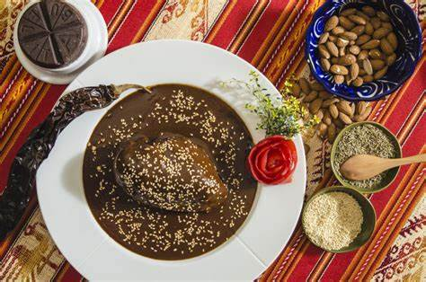

¡Bienvenidos a México!
En esta seccion hablaremos sobre la comida de México. De las mas populares a las mas conocidas Mexico tienen mucha rica comida.
Mis comidas favoritas de México son:
- Tacos
- Elote
- Tamales
El plato nacional de México es el Mole.
Existen mas de 50 variaciones de este plato. Consiste de una mezcla de diferentes especias y chile y luego se le añade harina de maiz para que quede mas espeso.
Aprende mas sobre algunas comidas tipicas de México
"¡Que rico! Me estoy salivando 😩" - Arlo el Ajolote